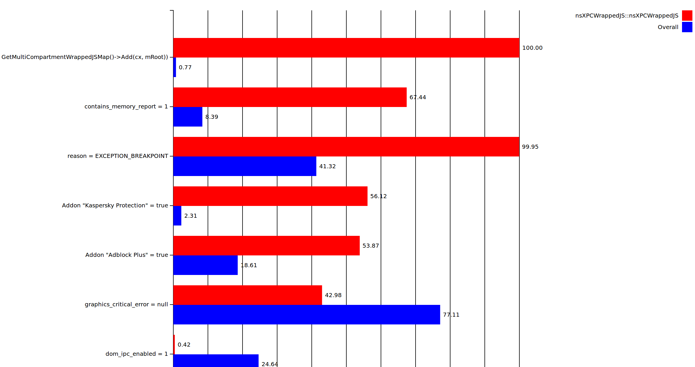
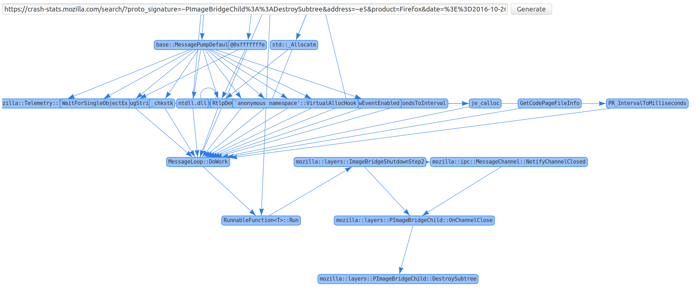
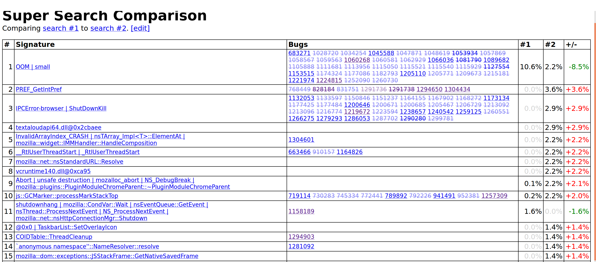
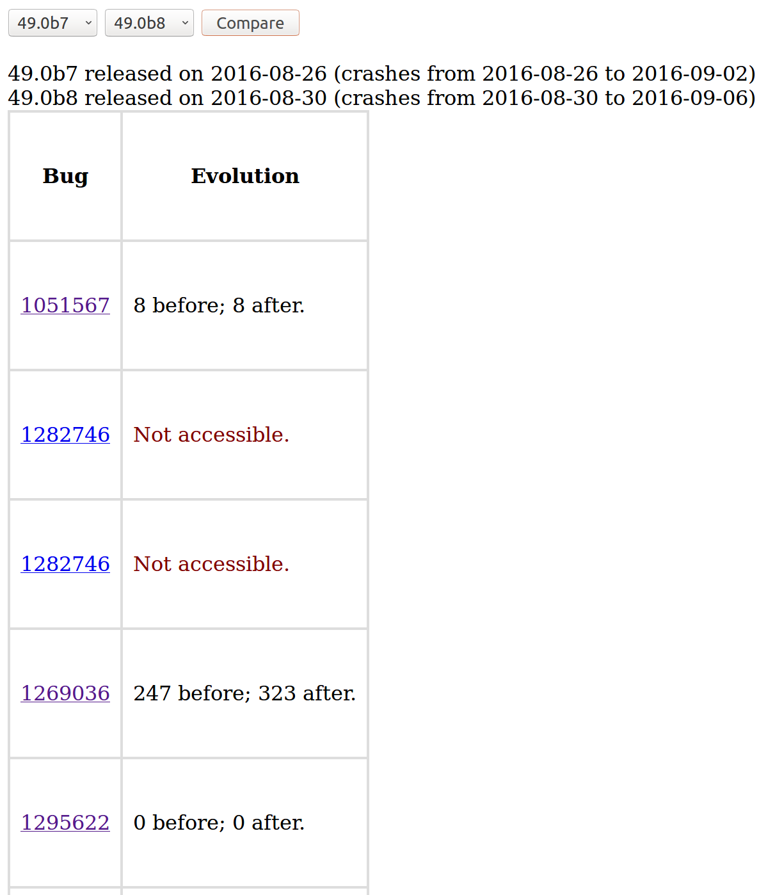
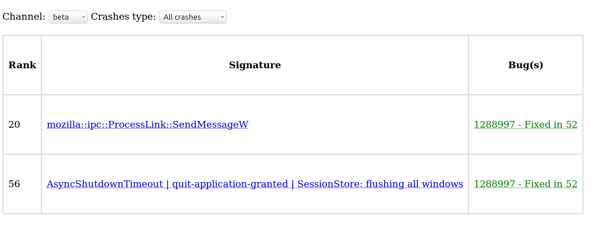
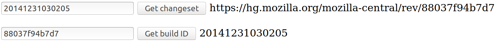
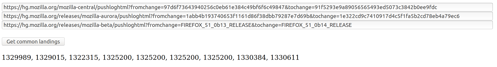
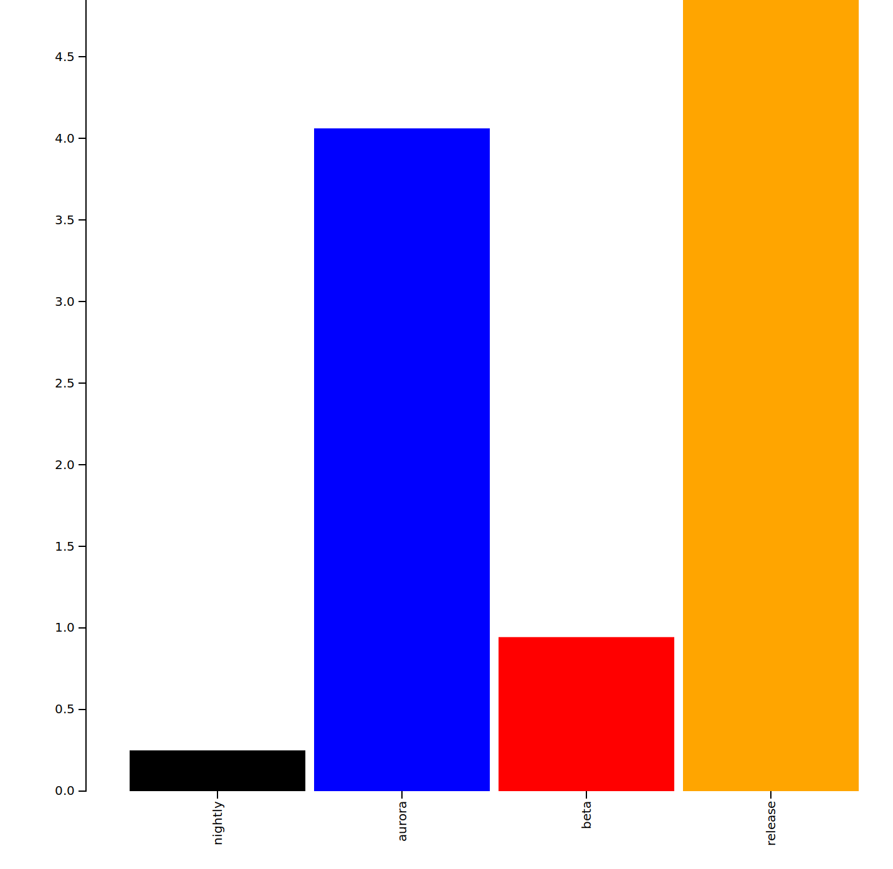
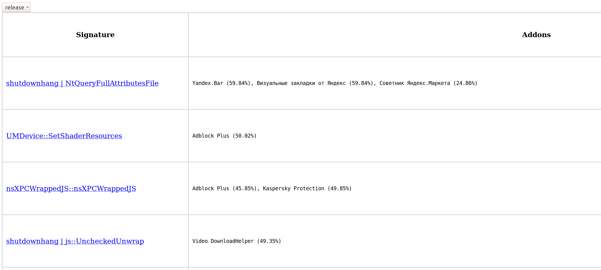
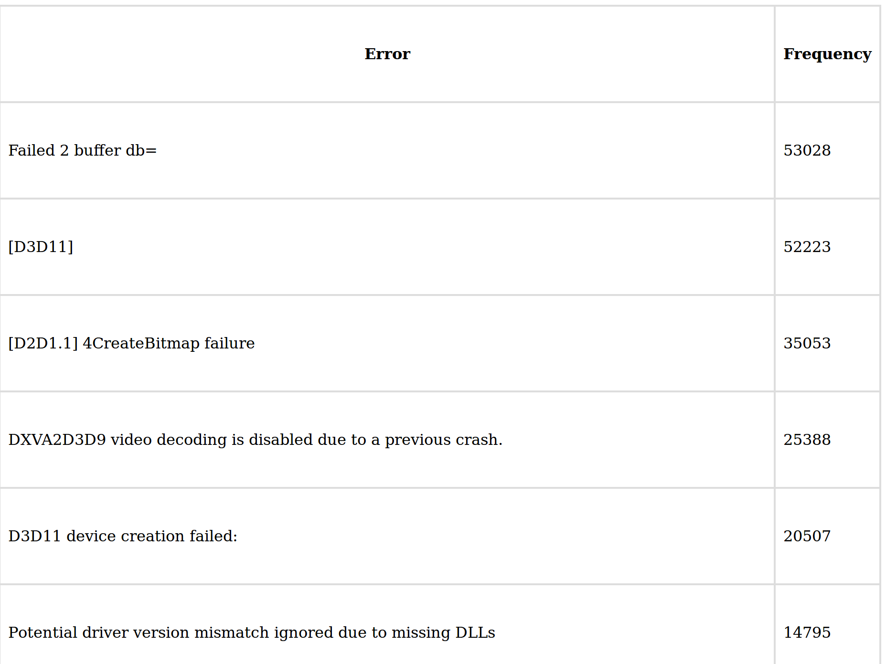

| Signature Correlations |  | SuperSearch Graph |  | Compare beta builds |  |
| Beta Pushlog Stability |  | Missing Uplifts (Top Crashes) Missing Uplifts (All Crashes) |
 | Build ID <-> Changeset conversion |  Changeset conversion" width="192" height="32" /> |
| Find common landings between channels |  | Analyze distribution differences between channels |  | List of addon-related signatures |  |
| List of graphics critical errors |  |